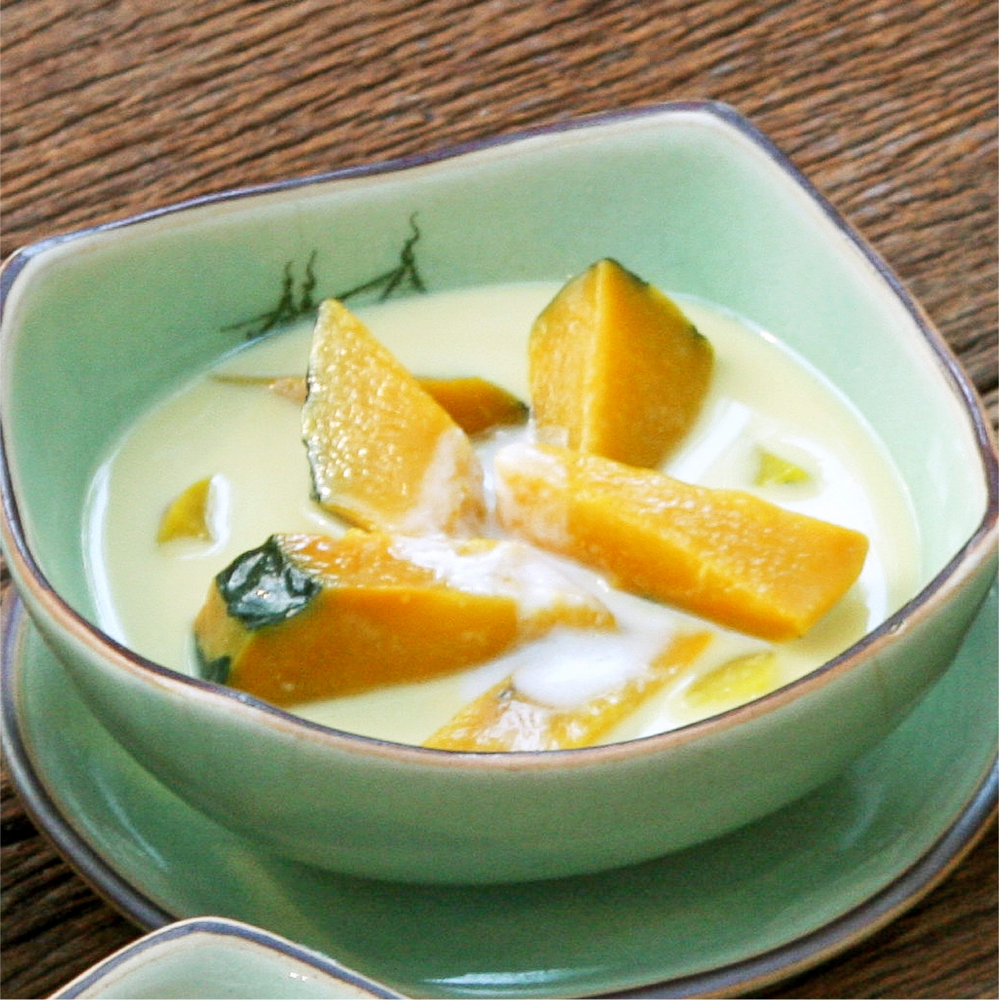

ฟักทองแกงบวด

ส่วนผสม
⋆ ฟักทอง 500 กรัม
⋆ น้ำปูนใส
⋆ กะทิ 250 มิลลิลิตร
⋆ ใบเตย 1 มัด
⋆ น้ำเปล่า 250 มิลลิลิตร
⋆ น้ำตาลมะพร้าว 100 กรัม หรือปริมาณตามชอบ
⋆ เกลือป่น 1 หยิบมือ
วิธีทำ
1) ปอกเปลือกฟักทองล้างให้สะอาด หั่นเป็นชิ้นนำลงแช่ในน้ำปูนใสประมาณ 30 นาที
เสร็จแล้วล้างด้วยน้ำสะอาด 2 รอบ ใส่ตะแกรงพักไว้ให้สะเด็ดน้ำ
2) ตั้งหม้อใส่กะทิกับใบเตย เติมน้ำเปล่า ใช้ไฟกลางพอเดือด
ใส่ฟักทองลงไปต้มจนสุก เติมน้ำตาลมะพร้าวและเกลือลงไป